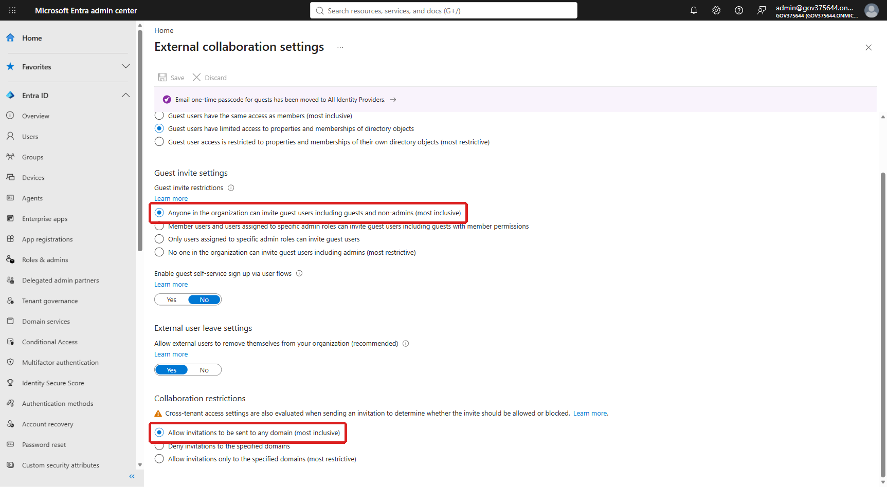
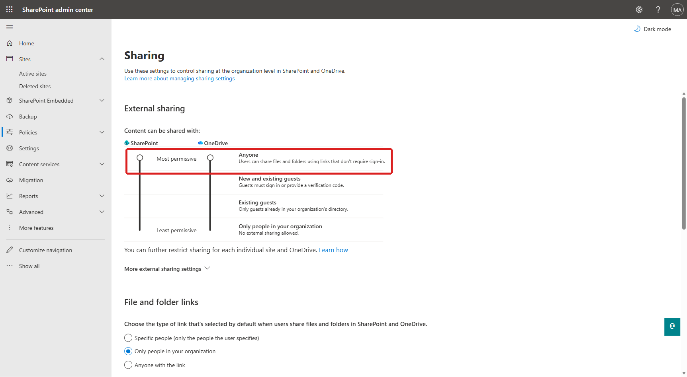
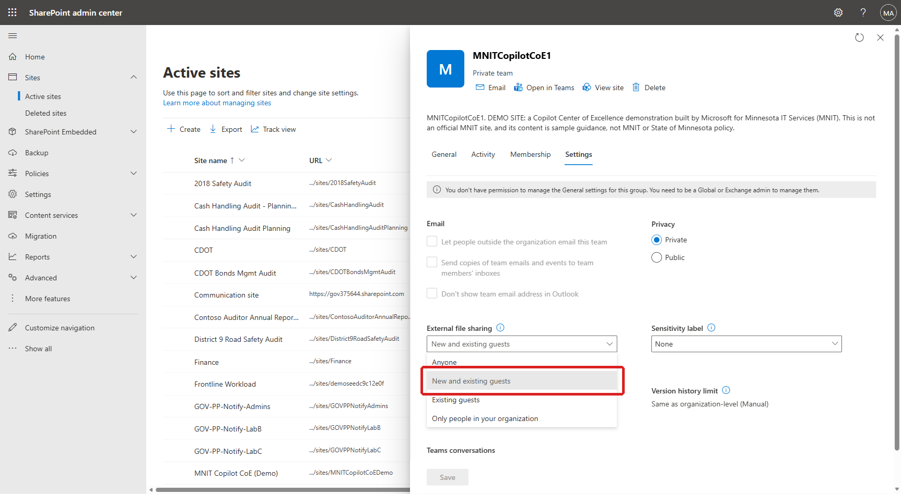
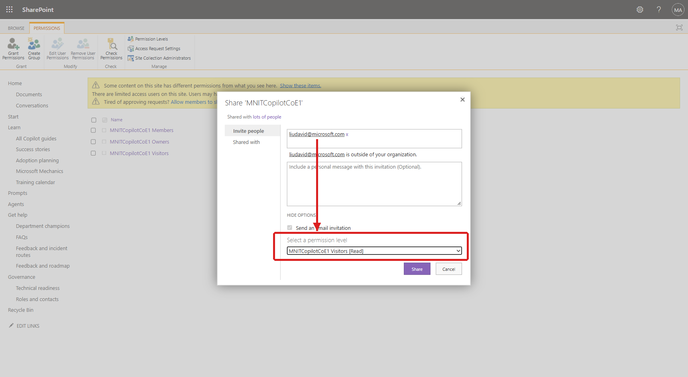

Addendum: sharing this site with one external guest
As the main tour notes under Get the kit: this kit's sites are private by default, and external sharing is off until an admin explicitly turns it on. Nothing here changes that default — it documents how to open the door for one site and one guest, deliberately.
1What we checked first — Microsoft Entra ID
Before touching SharePoint, confirm the tenant isn't blocking guests upstream. In Microsoft Entra admin center → Entra ID → External Identities → External collaboration settings, two settings matter:
- Guest invite settings: "Anyone in the organization can invite guest users" (most inclusive) — not restricted to admins only.
- Collaboration restrictions: "Allow invitations to be sent to any domain" (most inclusive) — the external person's domain isn't deny-listed or excluded from an allow-list.

We also checked External Identities → Cross-tenant access settings → Default settings: B2B collaboration (not B2B direct connect, which is a different feature) was "All allowed" for both inbound and outbound, with no tenant-specific override configured for the guest's organization. Also open by default — nothing to change.
2What we checked next — the SharePoint tenant policy
In SharePoint admin center → Policies → Sharing, the org-wide default controls what any site is allowed to do before a site-level setting narrows it further.

Also confirmed off: Limit external sharing by domain and Allow only users in specific security groups to share externally were both unchecked, so no hidden allow-list or group restriction was in play.
3Where the switch actually is — the site-level override
With the tenant wide open, the only thing blocking a new guest was a per-site setting, set to the most restrictive option by design when the kit deploys a site. This is the exact location:
- Go to the SharePoint admin center → Active sites.
- Select the site by name (for example,
MNITCopilotCoE1) to open its details panel. - Open the Settings tab.
- Under External file sharing, change the dropdown from Only people in your organization to New and existing guests.
- Select Save.

Why "New and existing guests" and not "Anyone": "Anyone" issues sign-in-free links for files/folders, which is unrelated to inviting a named person to browse a site. "New and existing guests" is the lowest setting that still lets you invite someone who isn't already a guest in your directory — they must sign in or verify with a one-time code. Use "Existing guests" instead if everyone you'll ever invite is already a guest.
4Adding the person as read-only (browse only, no edit)
Once the site allows guests, add the person directly to the site's built-in Visitors group — don't use the small "Add members" flyout from the site header (see the callout below).
- On the site, go to Settings (gear icon) → Site permissions → Advanced permissions settings (or browse directly to
/_layouts/15/user.aspxon the site). - On the Permissions ribbon, select Grant Permissions.
- Type the person's email address and select it once it resolves — SharePoint will label it "is outside of your organization" to confirm it recognized a guest.
- Select Show options.
- Under Select a permission level, choose
<Site name> Visitors [Read]. This grants browse/view access only. - Leave or clear Send an email invitation as you prefer, then select Share.

Two things that look like dead ends but aren't the problem
Gotchas we ran into along the way
- The modern "Add members" flyout (opened from the member count next to the site name) only adds people to the site's Microsoft 365 Group, and says so directly: "To add external guests, go to Outlook to invite others." It's the wrong panel for a one-off external guest — use Grant Permissions (Step 4) instead.
- At the time of this check, that Outlook "Add members" panel itself failed to load in this tenant (a generic connector/loading error, unrelated to any sharing policy). The classic Grant Permissions / Share path in Step 4 worked reliably and is also the only one of the options that lets you choose Read instead of defaulting to Edit.